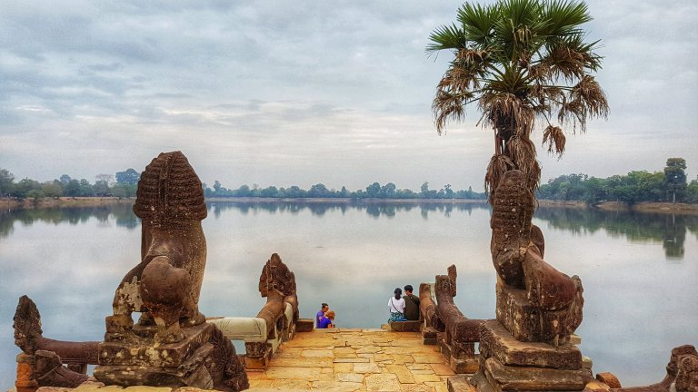

Il complesso di Angkor è una delle top destination che ci siamo prefissati di visitare ancor prima di iniziare quest’avventura.
Eccoci dunque qui, a Siem Reap: una cittadina caotica senza palazzi o grattacieli moderni, ma piena di baracchini ed edifici attaccati l’un l’altro situata a pochi chilometri dall’enorme struttura del complesso di Angkor. Dico enorme anche perchè guardando su Google maps dove si trovava questo sito rispetto alla città, sono rimasto impressionato dalle sue dimensioni!
Dopo aver deciso di noleggiare due biciclette in città ci avviamo pedalando verso il complesso dell’Angkor (forse è stata una stima troppo positiva la mia, dicendo a Giada che avremmo impiegato massimo 30 minuti a raggiungere l’entrata del sito) ci siamo ritrovati in mezzo al traffico. Arrivati in Cambogia dalla Thailandia abbiamo tirato un sospiro osservando che qui la corsia di guida era nuovamente quella destra (in Thailandia si guida sulla sinistra), purtroppo però a quanto pare questa regola non è ben entrata in testa agli scooteristi cambogiani. Infatti, pedalando diligentemente sul bordo destro della strada in direzione dell’Angkor, ci siamo ritrovati più volte a dover schivare uno o più motociclisti che viaggiavano nella direzione opposta sulla nostra corsia!!
Dopo circa 45 min di bicicletta (ci abbiamo messo tanto anche perché abbiamo dovuto anche comprare i ticket d’ingresso per il complesso dell’Angkor, venduti solamente in un posto un po’ inculato..) mi rendo presto conto che le mie ottimistiche previsioni non si sarebbero realizzate nemmeno con uno scarto di altri 30 minuti.. E qui, il caldo insopportabile e la consapevolezza che con qualche dollaro saremmo arrivati all’entrata del sito in qualche minuto in tuk tuk, ci siamo arresi.
Carichiamo le due biciclette su un tuk tuk e ripartiamo!
Angkor Wat
Il templio principale del complesso dell’Angkor, appunto Angkor Wat, è il primo che abbiamo visitato. Attraversato il ponte galleggiante che collega la “terra ferma” al parco/cortile del templio, abbiamo avuto modo di venire colpiti dalla sua grandezza! Ciononostante, forse per il troppo caldo, o per i troppi turisti all’interno di questo templio, l’Angkor non ci è piaciuto più di tanto.. Ci è sembrato molto impersonale e troppo ampio.
Senza scoraggiarci, e seguendo nuovamente le mie troppe ottimistiche stime per la durata del tragitto, ci avviamo pedalando verso l’Angkor Thom, anche conosciuto con il nome di Bayon Temple.
Angkor Thom
Wow, non era proprio una cosa che ci potevamo immaginare! Anche questo templio era affollatissimo di turisti!!
Scherzi a parte, questo templio ci è da subito piaciuto di più! Probabilmente perché più protetto dal sole grazie alla foresta che lo circonda, o forse per la struttura labirintica che abbiamo esplorato piano piano per poi raggiungere il secondo piano, dove centinaia di facce modellate nella pietra delle torri ci osservava.
Il labirinto di corridoi stretti al primo livello del templio.
Eccoci al secondo livello, dopo essere riusciti a farci posti tra la folla!
E uscendo dal templio.
Ta Prohm
Il complesso dell’Angkor è stato abbandonato nel mezzo del quindicesimo secolo. Da quel momento fino alla sua riscoperta, i templi al suo interno sono andati in decadenza e hanno soccombuto (sì, suona strano ma si dice così :P) alla forza della natura.
Il templio del Ta Prohm è infatti completamente immerso nella giungla, tanto che alcuni alberi crescono addirittura sulle mura di recinzione della costruzione.
Srah Srang
Prima di rientrare verso Siem Reap, facciamo un ultima tappa nei pressi di quello che una volta era un bacino idrico, e che ora offre un’atmosfera di calma ai turisti, che come noi, sono provati da una giornata passata ad esplorare e visitare i templi dell’Angkor.

Comment Section